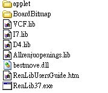
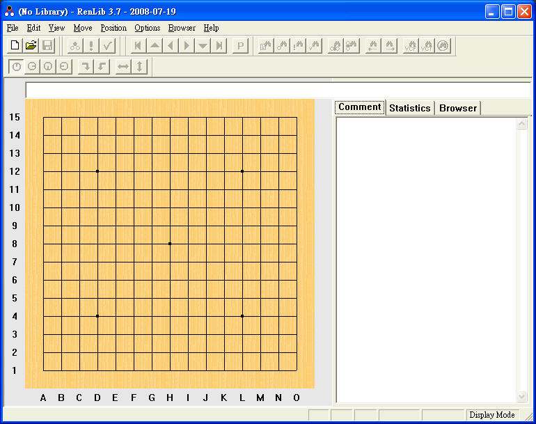
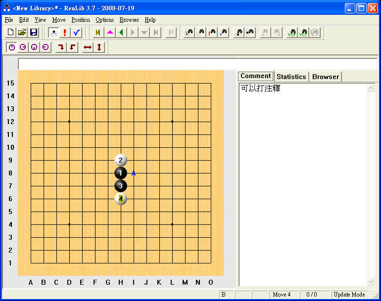

Renlib 3.7使用說明
解壓後檔案如下

執行RenLib37.exe即可，按左上白紙的按扭可以開新檔案，資料夾那個鈕可以開啟舊檔
本軟體儲存的副檔名為lib，副檔名為lib的檔都可以打開，如上圖I7和D4.lib是內附的浦月花月譜

磁片那個鈕是儲存檔案，再右邊是修改鈕，要按下才可修改檔案
紅色！是可以設定開啓檔案時出現的盤面
最右邊有VCF和VCT兩個鈕可以計算當前盤面有沒有VCF和VCT，其他鈕比較不重要自己試吧

◎修改鈕按下時，才可直接在盤面上打譜或打上注釋或合併棋譜
◎要刪除分支可以按鍵盤的Delete
◎要在盤面上標記則是按住Ctrl再點盤面即可，修改標記也是同樣方法
◎要合併數個棋譜，可以先建立一個資料夾，把要合併的檔案放進去，開啓其中一個檔案，再按左上File裡的Read
all，選擇剛才的資料夾後，即可把資料夾裡的棋譜都併進來，記得修改鈕要按下哦，否則沒法選Read all
◎右邊的Comment欄可以讓你打入盤面的注釋
◎看譜時按滑鼠左右鍵可以前進和後退